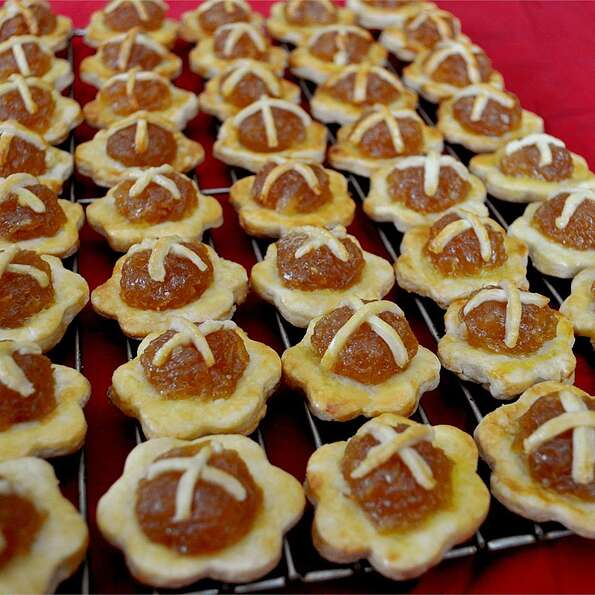

Pinapple Tarts

Ingredients
- 1 cup all-purpose flour
- 1 cup self-rising flour
- 10 tablespoons butter
- 1 egg, beaten
- 2 tablespoons cold water
- 1 pinch salt
- 2 cups fresh pineapple - peeled, cored and shredded
- 1 ½ cups white sugar
- 4 whole cloves
Steps
- In a large bowl, combine all-purpose, self-rising flour and salt.
Cut in butter until mixture resembles coarse crumbs. Make a well
in the center of the mixture. Pour in 1 beaten egg and water.
Bind the ingredients together gently. Do not knead too much.
Shape dough into a ball, wrap in plastic and refrigerate
for 4 hours or overnight.
- In a saucepan over medium heat, combine pineapple and sugar.
Bring to a boil. Reduce heat and simmer, stirring frequently,
for 30 minutes, or until mixture thickens. Remove from heat
and allow to cool.
- Preheat the oven to 400 degrees F (200 degrees C).
- On a lightly floured surface, roll the dough out to 1/4 inch
in thickness. Cut 24 rounds, using a 2 inch round fluted cutter.
Place on cookie sheet. Put a spoonful of pineapple jam in the
center of each piece. Decorate with criss-cross strips of
pastry over jam, extending slightly onto pastry shell.
- Cut 24 more 2 inch rounds, then, using a smaller cutter,
cut out the centers, creating a ring shape. Moisten the edges
of each pastry, and place the rings on top of each pastry shell.
Brush the top of the pastry with beaten egg.
- Bake for 20 to 25 minutes in the preheated oven. Allow to cool on
baking sheet for 5 minutes before removing to a wire rack to cool completely.